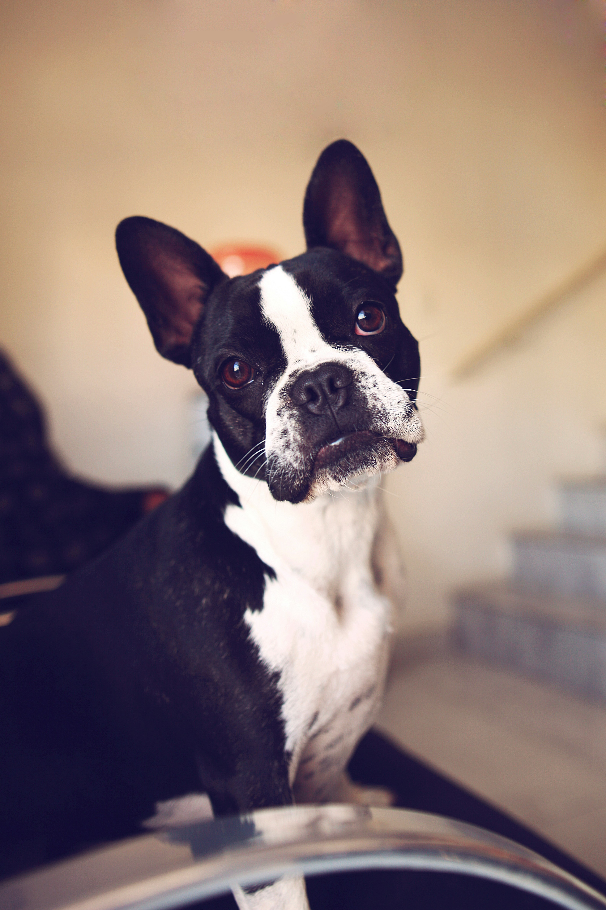
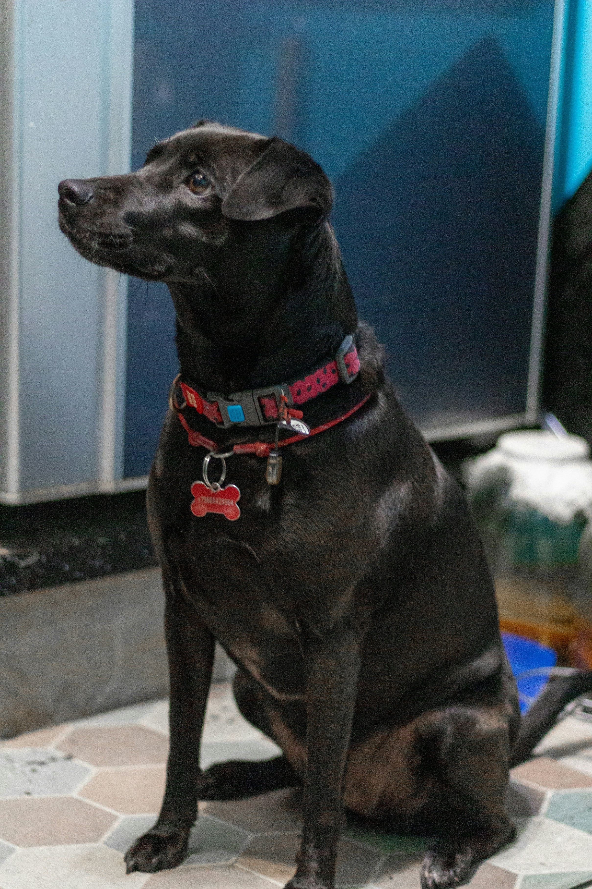
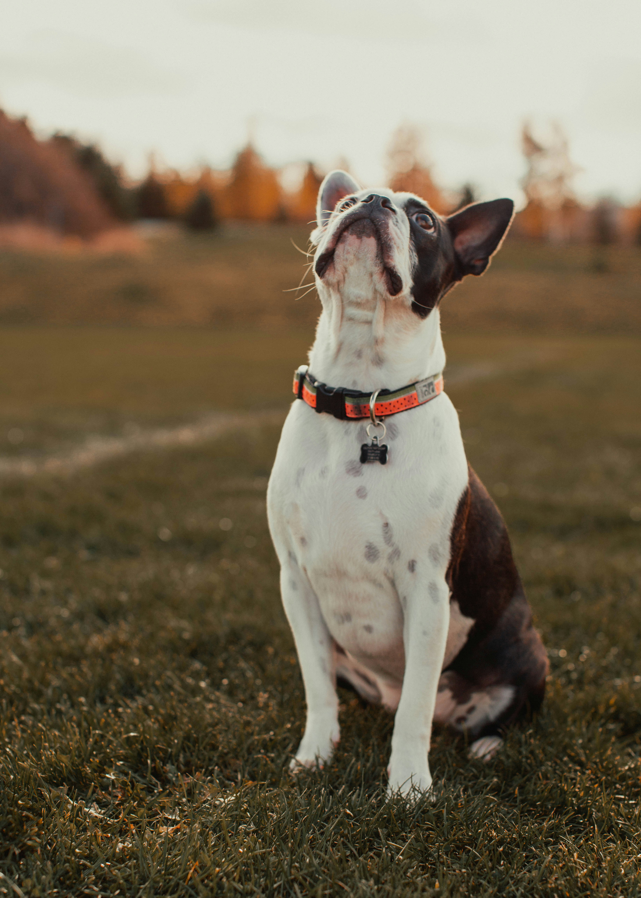
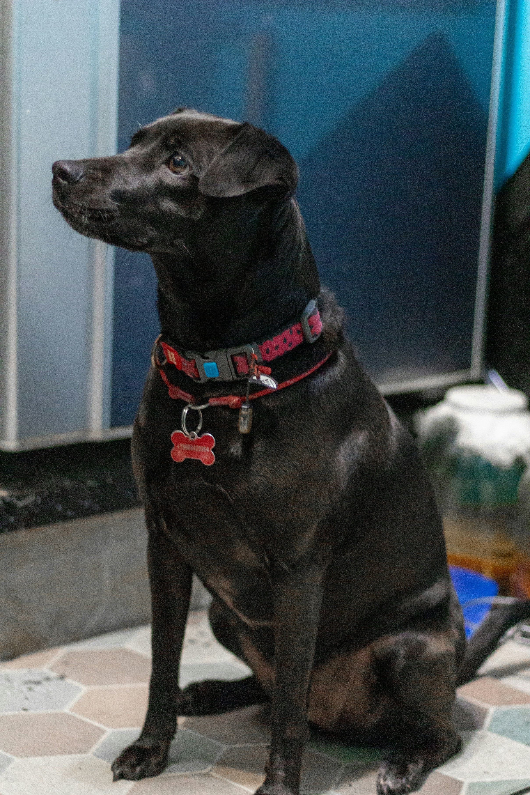
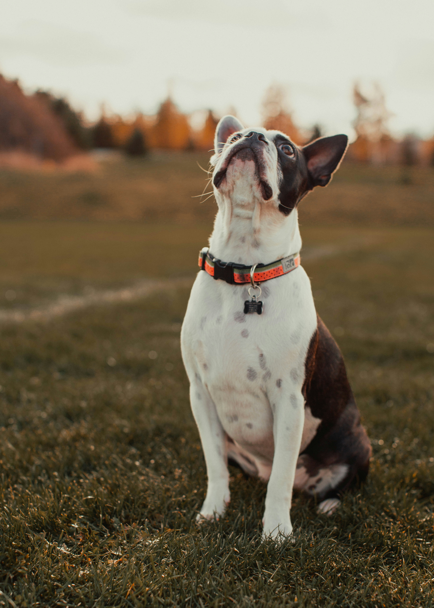
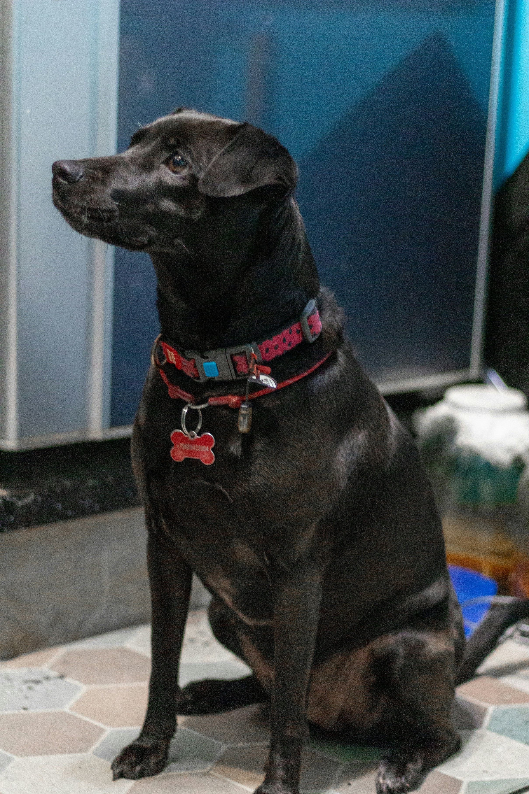
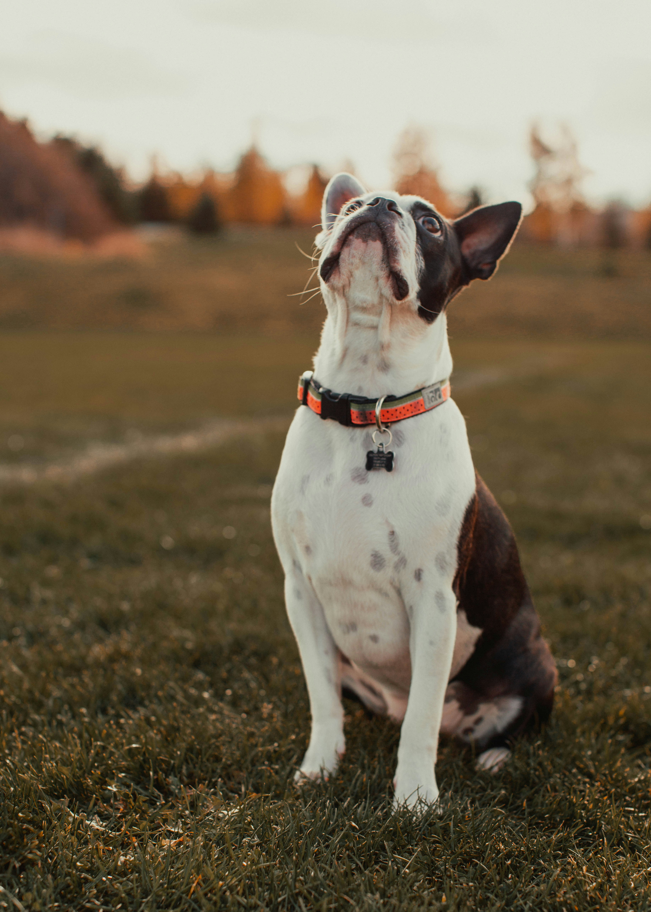
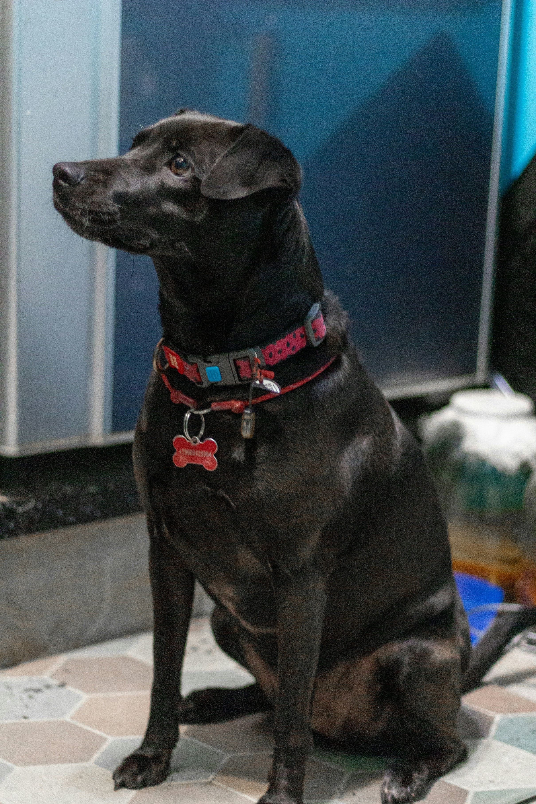
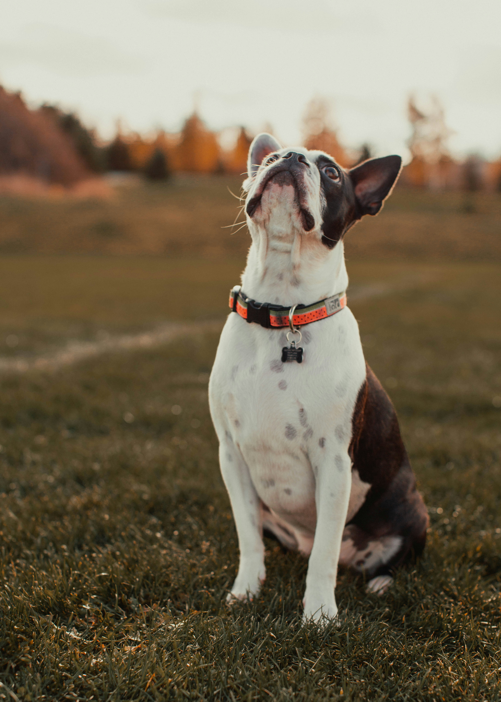

 








@Cheng
Dogs are domesticated mammals, not natural wild animals. They were originally bred from wolves. Dogs have been bred by humans for a long time, and were the first animals ever to be domesticated. Dogs are highly variable in shape, size, and colors. They are known for their loyalty, intelligence, and companionship. Different breeds have different characteristics, from working dogs to companion pets. The Biewer Terrier (/ˌbiːvər ˈtɛriər/) is a toy dog of German descent that is the result of two Yorkshire Terriers with a recessive piebald gene breeding. It is usually kept as a companion animal or a show dog. The Biewer Terrier was recognized by the AKC in 2021. Since May 2024 the Biewer Terrier is also accepted by the (VDH) Verband für das Deutsche Hundewesen in Germany.[1][2] The Biewer Terrier was first bred in Germany in 1984 by breeders Werner and Gertrude Biewer after two tricolor puppies were born in their kennel. A friend who was a veterinarian then suggested that the new breed be called "Biewer Yorkshire Terriers."[3][4] A pair of puppies named "Schneeflockchen von Friedheck" and "Schneeman" were both sold to singer Margot Eskens, who suggested adding “a la Pom Pon” to the breed's full name resulting in the full name of "Biewer Yorkshire Terrier a la Pom Pon."[3][5] American fanciers began importing the breed from Germany to the United States in 2002. The Biewer Terrier grew in popularity and the Biewer Terrier Club of America (BTCA) was formed in 2006 to promote the breed.[3] Members of the BTCA contacted Mars Veterinary to verify that the Biewer Terrier was a separate breed from the Yorkshire Terrier, After analyzing ten blood samples from the Biewer Terrier, it was concluded that the breed was separate from the Yorkshire Terrier.[6][3][7] The breed was admitted into the AKC's Foundation Stock Service in 2014 and became the 197th breed recognized by the American Kennel Club in 2021.[3][8][9][10]

